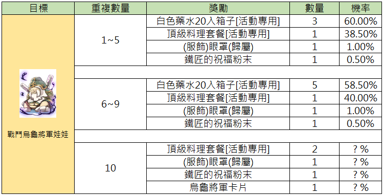
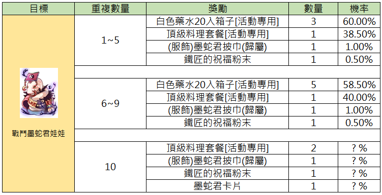
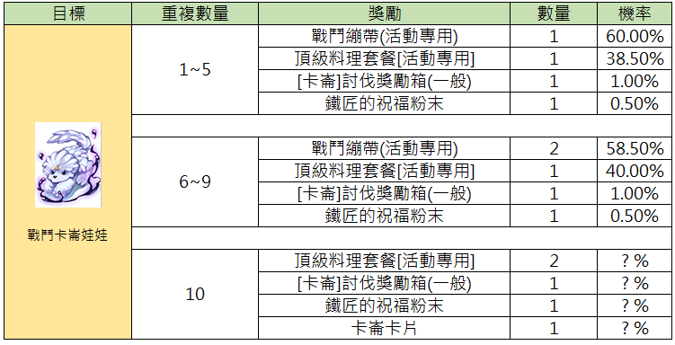
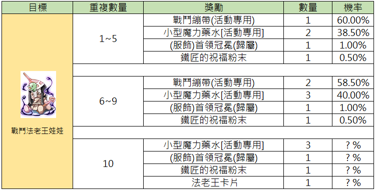
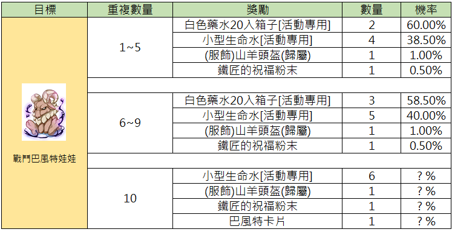
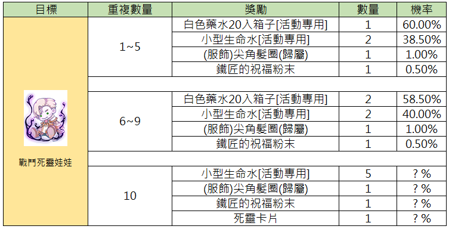
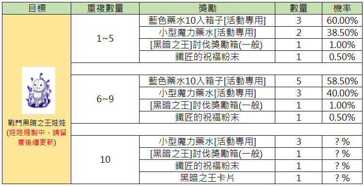
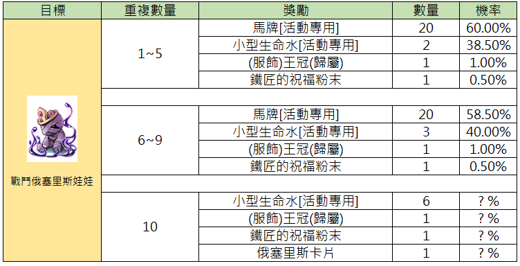
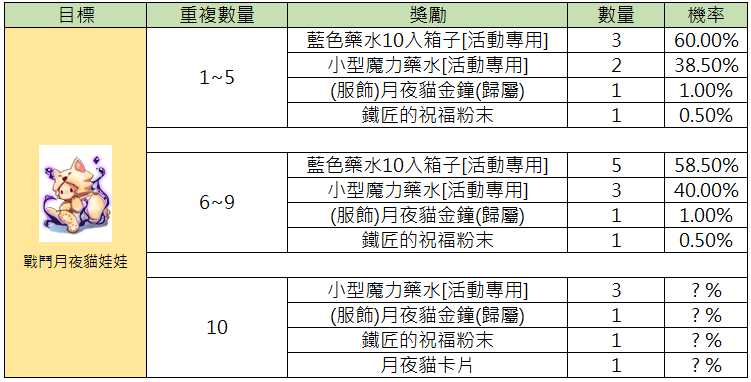
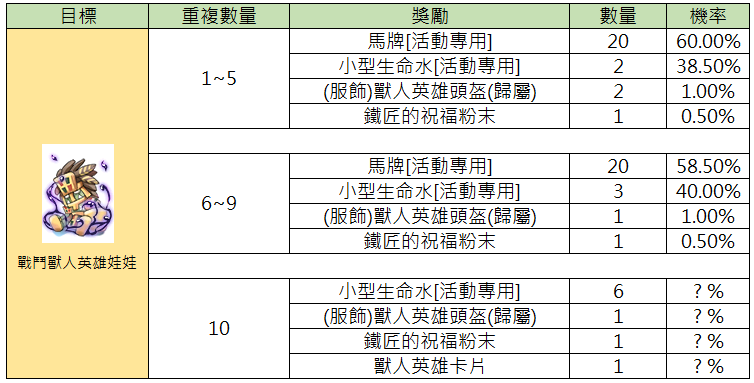

MVP Battle Dolls (MVP戰鬥娃娃)
Die Top-Tier-Variante des Battle-Doll-Systems — Puppen, die von MVP-Bossen droppen und deutlich stärkere Daily-Rewards liefern als die Normal-Variante.
🎎 Was sind MVP Battle Dolls?
MVP Battle Dolls droppen exklusiv von MVP-Bossen. Sie folgen derselben Mechanik wie Normal Dolls (nicht verbraucht, mehr Kopien = besserer Reward-Tier bei NPC Rex in prontera 260 268), bringen aber deutlich wertvollere Reward-Boxen.
📦 Reward-Liste (34 MVP Dolls)
Alle aktuell verfügbaren MVP Battle Dolls mit ihren offiziellen Reward-Tabellen (neueste zuerst):

Diese Tabelle zeigt die Belohnungen und Gewinnchancen für das Item 'Battle White Lady Doll', unterteilt nach verschiedenen Stufen oder Etappen.
| Stufe | Gegenstand | Anzahl | Wahrscheinlichkeit |
|---|---|---|---|
| 1~5 | White Potion Box 20 [Event] | 2 | 60.00% |
| 1~5 | Small Life Potion [Event] | 2 | 38.50% |
| 1~5 | (Costume) Lazy White Lady (Bound) | 1 | 1.00% |
| 1~5 | Blacksmith Blessing Powder | 1 | 0.50% |
| 6~9 | White Potion Box 20 [Event] | 3 | 58.50% |
| 6~9 | Small Life Potion [Event] | 2 | 40.00% |
| 6~9 | (Costume) Lazy White Lady (Bound) | 1 | 1.00% |
| 6~9 | Blacksmith Blessing Powder | 1 | 0.50% |
| 10 | Small Life Potion [Event] | 5 | ? % |
| 10 | (Costume) Lazy White Lady (Bound) | 1 | ? % |
| 10 | Blacksmith Blessing Powder | 1 | ? % |
| 10 | White Lady Card | 1 | ? % |
Die Spalte 'Stufe' bezieht sich auf die Gruppierung der Ergebnisse. Das Symbol links zeigt die Battle White Lady Doll.

Diese Tabelle zeigt die Drop-Wahrscheinlichkeiten für die Battle Tanys Doll, unterteilt nach verschiedenen Stufen.
| Stufe | Gegenstand | Menge | Wahrscheinlichkeit |
|---|---|---|---|
| 1~5 | Blue Potion Box (Event) | 4 | 60.00% |
| 1~5 | Small Mana Potion (Event) | 2 | 38.50% |
| 1~5 | (Costume) Lazy Tanys (Account Bound) | 1 | 1.00% |
| 1~5 | Blacksmith Blessing Powder | 1 | 0.50% |
| 6~9 | Blue Potion Box (Event) | 5 | 58.50% |
| 6~9 | Small Mana Potion (Event) | 3 | 40.00% |
| 6~9 | (Costume) Lazy Tanys (Account Bound) | 1 | 1.00% |
| 6~9 | Blacksmith Blessing Powder | 1 | 0.50% |
| 10 | Small Mana Potion (Event) | 4 | ? % |
| 10 | (Costume) Lazy Tanys (Account Bound) | 1 | ? % |
| 10 | Blacksmith Blessing Powder | 1 | ? % |
| 10 | Tanys Card | 1 | ? % |
Die im Bild gezeigte Entität heißt 'Battle Tanys Doll'. '歸屬' bedeutet, dass der Gegenstand an den Account gebunden ist.

Diese Tabelle zeigt die Belohnungen und Gewinnwahrscheinlichkeiten für das Event-Item 'General Turtle' basierend auf der Anzahl der Wiederholungen.
| Ziel | Wiederholungen | Belohnung | Menge | Wahrscheinlichkeit |
|---|---|---|---|---|
| General Turtle | 1~5 | White Potion Box 20 [Event Only] | 3 | 60.00% |
| General Turtle | 1~5 | Top Level Food Set [Event Only] | 1 | 38.50% |
| General Turtle | 1~5 | (Costume) Eye Patch (Bound) | 1 | 1.00% |
| General Turtle | 1~5 | Blacksmith Blessing Powder | 1 | 0.50% |
| General Turtle | 6~9 | White Potion Box 20 [Event Only] | 5 | 58.50% |
| General Turtle | 6~9 | Top Level Food Set [Event Only] | 1 | 40.00% |
| General Turtle | 6~9 | (Costume) Eye Patch (Bound) | 1 | 1.00% |
| General Turtle | 6~9 | Blacksmith Blessing Powder | 1 | 0.50% |
| General Turtle | 10 | Top Level Food Set [Event Only] | 2 | ?% |
| General Turtle | 10 | (Costume) Eye Patch (Bound) | 1 | ?% |
| General Turtle | 10 | Blacksmith Blessing Powder | 1 | ?% |
| General Turtle | 10 | General Turtle Card | 1 | ?% |
Die mit '?%' gekennzeichneten Werte geben an, dass die Wahrscheinlichkeit im Spiel nicht spezifiziert ist.

Diese Tabelle zeigt die Belohnungen und Gewinnchancen für das Besiegen von Kampf-MvP-Puppen, basierend auf der Anzahl der Wiederholungen.
| Ziel | Wiederholungsanzahl | Belohnung | Menge | Wahrscheinlichkeit |
|---|---|---|---|---|
| Battle MvP Doll | 1~5 | White Potion Box 20ea [Event] | 3 | 60.00% |
| Battle MvP Doll | 1~5 | Premium Food Set [Event] | 1 | 38.50% |
| Battle MvP Doll | 1~5 | (Costume) MvP Scelest Scarf [Bound] | 1 | 1.00% |
| Battle MvP Doll | 1~5 | Blacksmith Blessing Powder | 1 | 0.50% |
| Battle MvP Doll | 6~9 | White Potion Box 20ea [Event] | 5 | 58.50% |
| Battle MvP Doll | 6~9 | Premium Food Set [Event] | 1 | 40.00% |
| Battle MvP Doll | 6~9 | (Costume) MvP Scelest Scarf [Bound] | 1 | 1.00% |
| Battle MvP Doll | 6~9 | Blacksmith Blessing Powder | 1 | 0.50% |
| Battle MvP Doll | 10 | Premium Food Set [Event] | 2 | ? % |
| Battle MvP Doll | 10 | (Costume) MvP Scelest Scarf [Bound] | 1 | ? % |
| Battle MvP Doll | 10 | Blacksmith Blessing Powder | 1 | ? % |
| Battle MvP Doll | 10 | MvP Scelest Card | 1 | ? % |
Die mit '? %' markierten Felder zeigen an, dass die exakten Wahrscheinlichkeiten für die 10. Wiederholung nicht spezifiziert sind.

Diese Tabelle zeigt die Belohnungschancen für das Sammeln von Battle Death Knight Dolls, unterteilt nach der Anzahl der gesammelten Gegenstände.
| Ziel | Anzahl der Wiederholungen | Belohnung | Menge | Wahrscheinlichkeit |
|---|---|---|---|---|
| Battle Death Knight Doll (in Herstellung, bitte auf Updates achten) | 1~5 | Horse Token [Event] | 30 | 60.00% |
| Battle Death Knight Doll (in Herstellung, bitte auf Updates achten) | 1~5 | Top Grade Food Set [Event] | 1 | 38.50% |
| Battle Death Knight Doll (in Herstellung, bitte auf Updates achten) | 1~5 | (Costume) Death Knight Shield [Account Bound] | 1 | 1.00% |
| Battle Death Knight Doll (in Herstellung, bitte auf Updates achten) | 1~5 | Blacksmith Blessing Powder | 1 | 0.50% |
| Battle Death Knight Doll (in Herstellung, bitte auf Updates achten) | 6~9 | Horse Token [Event] | 30 | 58.50% |
| Battle Death Knight Doll (in Herstellung, bitte auf Updates achten) | 6~9 | Top Grade Food Set [Event] | 1 | 40.00% |
| Battle Death Knight Doll (in Herstellung, bitte auf Updates achten) | 6~9 | (Costume) Death Knight Shield [Account Bound] | 1 | 1.00% |
| Battle Death Knight Doll (in Herstellung, bitte auf Updates achten) | 6~9 | Blacksmith Blessing Powder | 1 | 0.50% |
| Battle Death Knight Doll (in Herstellung, bitte auf Updates achten) | 10 | Top Grade Food Set [Event] | 2 | ?% |
| Battle Death Knight Doll (in Herstellung, bitte auf Updates achten) | 10 | (Costume) Death Knight Shield [Account Bound] | 1 | ?% |
| Battle Death Knight Doll (in Herstellung, bitte auf Updates achten) | 10 | Blacksmith Blessing Powder | 1 | ?% |
| Battle Death Knight Doll (in Herstellung, bitte auf Updates achten) | 10 | Death Knight Card | 1 | ?% |
Die Battle Death Knight Doll befindet sich laut Bild aktuell noch in der Implementierungsphase.

Diese Tabelle zeigt die Belohnungen und Gewinnwahrscheinlichkeiten für das Sammeln von 'Battle Katrinn Doll' abhängig von der Menge.
| Ziel | Anzahl Wiederholungen | Belohnung | Menge | Wahrscheinlichkeit |
|---|---|---|---|---|
| Battle Katrinn Doll | 1~5 | Battle Manual (Event) | 1 | 60.00% |
| Battle Katrinn Doll | 1~5 | High-End Food Set [Event] | 1 | 38.50% |
| Battle Katrinn Doll | 1~5 | [Katrinn] Hunting Reward Box (Normal) | 1 | 1.00% |
| Battle Katrinn Doll | 1~5 | Blacksmith Blessing Powder | 1 | 0.50% |
| Battle Katrinn Doll | 6~9 | Battle Manual (Event) | 2 | 58.50% |
| Battle Katrinn Doll | 6~9 | High-End Food Set [Event] | 1 | 40.00% |
| Battle Katrinn Doll | 6~9 | [Katrinn] Hunting Reward Box (Normal) | 1 | 1.00% |
| Battle Katrinn Doll | 6~9 | Blacksmith Blessing Powder | 1 | 0.50% |
| Battle Katrinn Doll | 10 | High-End Food Set [Event] | 2 | ? % |
| Battle Katrinn Doll | 10 | [Katrinn] Hunting Reward Box (Normal) | 1 | ? % |
| Battle Katrinn Doll | 10 | Blacksmith Blessing Powder | 1 | ? % |
| Battle Katrinn Doll | 10 | Katrinn Card | 1 | ? % |
Die mit '? %' gekennzeichneten Werte in der 10er-Kategorie sind im Original nicht spezifiziert.

Diese Tabelle zeigt die Belohnungen und Wahrscheinlichkeiten für das Sammeln der 'Battle Ice Knight Doll', unterteilt nach der Anzahl der Wiederholungen.
| Ziel | Wiederholungen | Belohnung | Anzahl | Wahrscheinlichkeit |
|---|---|---|---|---|
| Battle Ice Knight Doll | 1~5 | White Potion Box 20ea [Event] | 3 | 60.00% |
| Battle Ice Knight Doll | 1~5 | Top-grade Meal [Event] | 1 | 38.50% |
| Battle Ice Knight Doll | 1~5 | [Ice Knight] Hunt Reward Box (Normal) | 1 | 1.00% |
| Battle Ice Knight Doll | 1~5 | Blacksmith Blessing Powder | 1 | 0.50% |
| Battle Ice Knight Doll | 6~9 | White Potion Box 20ea [Event] | 5 | 58.50% |
| Battle Ice Knight Doll | 6~9 | Top-grade Meal [Event] | 1 | 40.00% |
| Battle Ice Knight Doll | 6~9 | [Ice Knight] Hunt Reward Box (Normal) | 1 | 1.00% |
| Battle Ice Knight Doll | 6~9 | Blacksmith Blessing Powder | 1 | 0.50% |
| Battle Ice Knight Doll | 10 | Top-grade Meal [Event] | 2 | ?% |
| Battle Ice Knight Doll | 10 | [Ice Knight] Hunt Reward Box (Normal) | 1 | ?% |
| Battle Ice Knight Doll | 10 | Blacksmith Blessing Powder | 1 | ?% |
| Battle Ice Knight Doll | 10 | Ice Knight Card | 1 | ?% |
Bei 10 Wiederholungen sind die exakten Wahrscheinlichkeiten im UI als unbekannt (?) markiert.

Diese Tabelle zeigt die Wahrscheinlichkeiten für verschiedene Belohnungen basierend auf der Anzahl der Wiederholungen beim 'Battle Pharaoh Doll' Event.
| Ziel | Anzahl der Wiederholungen | Belohnung | Menge | Wahrscheinlichkeit |
|---|---|---|---|---|
| Battle Pharaoh Doll | 1~5 | Battle Field Bandage (Event) | 1 | 60.00% |
| Battle Pharaoh Doll | 1~5 | Small Mana Potion (Event) | 2 | 38.50% |
| Battle Pharaoh Doll | 1~5 | (Costume) Pharaoh Coronet (Bound) | 1 | 1.00% |
| Battle Pharaoh Doll | 1~5 | Blacksmith Blessing Powder | 1 | 0.50% |
| Battle Pharaoh Doll | 6~9 | Battle Field Bandage (Event) | 2 | 58.50% |
| Battle Pharaoh Doll | 6~9 | Small Mana Potion (Event) | 3 | 40.00% |
| Battle Pharaoh Doll | 6~9 | (Costume) Pharaoh Coronet (Bound) | 1 | 1.00% |
| Battle Pharaoh Doll | 6~9 | Blacksmith Blessing Powder | 1 | 0.50% |
| Battle Pharaoh Doll | 10 | Small Mana Potion (Event) | 3 | ?% |
| Battle Pharaoh Doll | 10 | (Costume) Pharaoh Coronet (Bound) | 1 | ?% |
| Battle Pharaoh Doll | 10 | Blacksmith Blessing Powder | 1 | ?% |
| Battle Pharaoh Doll | 10 | Pharaoh Card | 1 | ?% |
Die mit '?%' markierten Werte sind in der Vorlage nicht spezifiziert.

Diese Tabelle zeigt die Belohnungen für das Sammeln der 'Kampf-Baphomet-Puppe' basierend auf der Anzahl der abgegebenen Gegenstände.
| Ziel | Anzahl Wiederholungen | Belohnung | Menge | Chance |
|---|---|---|---|---|
| Kampf-Baphomet-Puppe | 1~5 | White Potion Box 20ea [Event] | 2 | 60.00% |
| Kampf-Baphomet-Puppe | 1~5 | Small Life Potion [Event] | 4 | 38.50% |
| Kampf-Baphomet-Puppe | 1~5 | (Costume) Goat Helm [Account Bound] | 1 | 1.00% |
| Kampf-Baphomet-Puppe | 1~5 | Blacksmith Blessing Powder | 1 | 0.50% |
| Kampf-Baphomet-Puppe | 6~9 | White Potion Box 20ea [Event] | 3 | 58.50% |
| Kampf-Baphomet-Puppe | 6~9 | Small Life Potion [Event] | 5 | 40.00% |
| Kampf-Baphomet-Puppe | 6~9 | (Costume) Goat Helm [Account Bound] | 1 | 1.00% |
| Kampf-Baphomet-Puppe | 6~9 | Blacksmith Blessing Powder | 1 | 0.50% |
| Kampf-Baphomet-Puppe | 10 | Small Life Potion [Event] | 6 | ? % |
| Kampf-Baphomet-Puppe | 10 | (Costume) Goat Helm [Account Bound] | 1 | ? % |
| Kampf-Baphomet-Puppe | 10 | Blacksmith Blessing Powder | 1 | ? % |
| Kampf-Baphomet-Puppe | 10 | Baphomet Card | 1 | ? % |
Die mit '? %' markierten Felder geben die im Screenshot fehlenden Wahrscheinlichkeiten für die 10. Abgabe an.

Diese Tabelle zeigt die Belohnungen und deren Wahrscheinlichkeiten basierend auf der Anzahl der Wiederholungen für den Gegenstand 'Battle Necromancer Doll'.
| Ziel | Wiederholungsanzahl | Belohnung | Anzahl | Wahrscheinlichkeit |
|---|---|---|---|---|
| Battle Necromancer Doll | 1~5 | White Potion Box 20 [Event] | 1 | 60.00% |
| Battle Necromancer Doll | 1~5 | Small Life Potion [Event] | 2 | 38.50% |
| Battle Necromancer Doll | 1~5 | (Costume) Spiky Hairband [Bound] | 1 | 1.00% |
| Battle Necromancer Doll | 1~5 | Blacksmith Blessing Powder | 1 | 0.50% |
| Battle Necromancer Doll | 6~9 | White Potion Box 20 [Event] | 2 | 58.50% |
| Battle Necromancer Doll | 6~9 | Small Life Potion [Event] | 2 | 40.00% |
| Battle Necromancer Doll | 6~9 | (Costume) Spiky Hairband [Bound] | 1 | 1.00% |
| Battle Necromancer Doll | 6~9 | Blacksmith Blessing Powder | 1 | 0.50% |
| Battle Necromancer Doll | 10 | Small Life Potion [Event] | 5 | ? % |
| Battle Necromancer Doll | 10 | (Costume) Spiky Hairband [Bound] | 1 | ? % |
| Battle Necromancer Doll | 10 | Blacksmith Blessing Powder | 1 | ? % |
| Battle Necromancer Doll | 10 | Necromancer Card | 1 | ? % |
Die mit '? %' markierten Wahrscheinlichkeiten sind im Spiel aktuell nicht spezifiziert. 'Bound' steht für Gegenstände, die an den Charakter gebunden sind.
Diese Tabelle zeigt die potenziellen Belohnungen und deren Wahrscheinlichkeiten basierend auf der Anzahl der Wiederholungen beim Kampf gegen die 'Battle Dracula Doll'.
| Ziel | Wiederholungsanzahl | Belohnung | Menge | Wahrscheinlichkeit |
|---|---|---|---|---|
| Battle Dracula Doll | 1~5 | Blue Potion Box 10 [Event] | 4 | 60.00% |
| Battle Dracula Doll | 1~5 | Small Mana Potion [Event] | 2 | 38.50% |
| Battle Dracula Doll | 1~5 | (Costume) Vampire Mask [Bound] | 1 | 1.00% |
| Battle Dracula Doll | 1~5 | Blacksmith Blessing Powder | 1 | 0.50% |
| Battle Dracula Doll | 6~9 | Blue Potion Box 10 [Event] | 5 | 58.50% |
| Battle Dracula Doll | 6~9 | Small Mana Potion [Event] | 3 | 40.00% |
| Battle Dracula Doll | 6~9 | (Costume) Vampire Mask [Bound] | 1 | 1.00% |
| Battle Dracula Doll | 6~9 | Blacksmith Blessing Powder | 1 | 0.50% |
| Battle Dracula Doll | 10 | Small Mana Potion [Event] | 4 | ? % |
| Battle Dracula Doll | 10 | (Costume) Vampire Mask [Bound] | 1 | ? % |
| Battle Dracula Doll | 10 | Blacksmith Blessing Powder | 1 | ? % |
| Battle Dracula Doll | 10 | Dracula Card | 1 | ? % |
Die Tabelle illustriert Belohnungsstufen für ein Event. Bei 10 Wiederholungen sind die exakten Wahrscheinlichkeiten im Spiel nicht spezifiziert (angezeigt als ? %).

Diese Tabelle listet die Belohnungen basierend auf der Anzahl der Wiederholungen für die Dark Lord Puppe auf.
| Ziel | Wiederholungen | Belohnung | Anzahl | Wahrscheinlichkeit |
|---|---|---|---|---|
| Dark Lord Doll (in Produktion) | 1~5 | Blue Potion Box(10ea)[Event] | 3 | 60.00% |
| Dark Lord Doll (in Produktion) | 1~5 | Small Mana Potion[Event] | 2 | 38.50% |
| Dark Lord Doll (in Produktion) | 1~5 | Dark Lord Reward Box(Normal) | 1 | 1.00% |
| Dark Lord Doll (in Produktion) | 1~5 | Blacksmith Blessing Powder | 1 | 0.50% |
| Dark Lord Doll (in Produktion) | 6~9 | Blue Potion Box(10ea)[Event] | 5 | 58.50% |
| Dark Lord Doll (in Produktion) | 6~9 | Small Mana Potion[Event] | 3 | 40.00% |
| Dark Lord Doll (in Produktion) | 6~9 | Dark Lord Reward Box(Normal) | 1 | 1.00% |
| Dark Lord Doll (in Produktion) | 6~9 | Blacksmith Blessing Powder | 1 | 0.50% |
| Dark Lord Doll (in Produktion) | 10 | Small Mana Potion[Event] | 3 | ? % |
| Dark Lord Doll (in Produktion) | 10 | Dark Lord Reward Box(Normal) | 1 | ? % |
| Dark Lord Doll (in Produktion) | 10 | Blacksmith Blessing Powder | 1 | ? % |
| Dark Lord Doll (in Produktion) | 10 | Dark Lord Card | 1 | ? % |
Die Fußnote besagt, dass die Puppe derzeit in der Herstellung/Überarbeitung ist und man auf zukünftige Updates achten soll.

Diese Tabelle zeigt die Belohnungen und Gewinnchancen für das Item 'Battle Pirate King Doll' basierend auf der Anzahl der Wiederholungen.
| Ziel | Wiederholungen | Belohnung | Menge | Wahrscheinlichkeit |
|---|---|---|---|---|
| Battle Pirate King Doll (Herstellung der Puppe läuft, bitte auf Updates achten) | 1~5 | Horse Token [Event] | 20 | 60.00% |
| 1~5 | Small Life Potion [Event] | 2 | 38.50% | |
| 1~5 | (Costume) Pirate Captain Hat [Bound] | 1 | 1.00% | |
| 1~5 | Blacksmith Blessing Powder | 1 | 0.50% | |
| 6~9 | Horse Token [Event] | 20 | 58.50% | |
| 6~9 | Small Life Potion [Event] | 2 | 40.00% | |
| 6~9 | (Costume) Pirate Captain Hat [Bound] | 1 | 1.00% | |
| 6~9 | Blacksmith Blessing Powder | 1 | 0.50% | |
| 10 | Small Life Potion [Event] | 6 | ? % | |
| 10 | (Costume) Pirate Captain Hat [Bound] | 1 | ? % | |
| 10 | Blacksmith Blessing Powder | 1 | ? % | |
| 10 | Drake Card | 1 | ? % |
Die Daten für die 10. Wiederholung sind aktuell noch unbekannt (?%).

Diese Tabelle zeigt die Belohnungen und Wahrscheinlichkeiten für das Besiegen der Tao Gunka Doll, unterteilt nach der Anzahl der Wiederholungen.
| Ziel | Wiederholungsanzahl | Belohnung | Anzahl | Wahrscheinlichkeit |
|---|---|---|---|---|
| Battle Tao Gunka Doll (Doll stitching in progress, please stay tuned for future updates) | 1~5 | Blue Potion Box 10ea [Event] | 3 | 60.00% |
| 1~5 | Small Mana Potion [Event] | 2 | 38.50% | |
| 1~5 | [Tao Gunka] Hunting Reward Box (Normal) | 1 | 1.00% | |
| 1~5 | Blacksmith Blessing Powder | 1 | 0.50% | |
| 6~9 | Blue Potion Box 10ea [Event] | 5 | 58.50% | |
| 6~9 | Small Mana Potion [Event] | 3 | 40.00% | |
| 6~9 | [Tao Gunka] Hunting Reward Box (Normal) | 1 | 1.00% | |
| 6~9 | Blacksmith Blessing Powder | 1 | 0.50% | |
| 10 | Small Mana Potion [Event] | 3 | ? % | |
| 10 | [Tao Gunka] Hunting Reward Box (Normal) | 1 | ? % | |
| 10 | Blacksmith Blessing Powder | 1 | ? % | |
| 10 | Tao Gunka Card | 1 | ? % |
Die mit '? %' markierten Wahrscheinlichkeiten für die 10. Wiederholung sind aktuell unbekannt oder noch nicht implementiert.

Diese Tabelle zeigt die Belohnungen und Gewinnwahrscheinlichkeiten für das Sammeln der 'Battle Osiris Doll' in Ragnarok Zero, unterteilt nach der Anzahl der Wiederholungen.
| Ziel | Wiederholungen | Belohnung | Anzahl | Wahrscheinlichkeit |
|---|---|---|---|---|
| Battle Osiris Doll | 1~5 | Horse Token [Event] | 20 | 60.00% |
| Battle Osiris Doll | 1~5 | Small Life Potion [Event] | 2 | 38.50% |
| Battle Osiris Doll | 1~5 | (Costume) Crown (Bound) | 1 | 1.00% |
| Battle Osiris Doll | 1~5 | Blacksmith Blessing Powder | 1 | 0.50% |
| Battle Osiris Doll | 6~9 | Horse Token [Event] | 20 | 58.50% |
| Battle Osiris Doll | 6~9 | Small Life Potion [Event] | 3 | 40.00% |
| Battle Osiris Doll | 6~9 | (Costume) Crown (Bound) | 1 | 1.00% |
| Battle Osiris Doll | 6~9 | Blacksmith Blessing Powder | 1 | 0.50% |
| Battle Osiris Doll | 10 | Small Life Potion [Event] | 6 | ? % |
| Battle Osiris Doll | 10 | (Costume) Crown (Bound) | 1 | ? % |
| Battle Osiris Doll | 10 | Blacksmith Blessing Powder | 1 | ? % |
| Battle Osiris Doll | 10 | Osiris Card | 1 | ? % |
Die Werte für die 10. Wiederholung sind aktuell nicht spezifiziert (? %). 'Bound' bezieht sich auf accountgebundene Gegenstände.

Diese Tabelle zeigt die Belohnungen und Gewinnchancen für das 'Battle Ancient Mummy Doll'-Event basierend auf der Anzahl der Wiederholungen.
| Ziel | Wiederholungsanzahl | Belohnung | Menge | Wahrscheinlichkeit |
|---|---|---|---|---|
| Battle Ancient Mummy Doll | 1~5 | Blue Potion Box (Event) (10ea) | 3 | 60.00% |
| Battle Ancient Mummy Doll | 1~5 | Small Mana Potion (Event) | 2 | 38.50% |
| Battle Ancient Mummy Doll | 1~5 | (Costume) Sphinx Hat (Account Bound) | 1 | 1.00% |
| Battle Ancient Mummy Doll | 1~5 | Blacksmith Blessing Powder | 1 | 0.50% |
| Battle Ancient Mummy Doll | 6~9 | Blue Potion Box (Event) (10ea) | 5 | 58.50% |
| Battle Ancient Mummy Doll | 6~9 | Small Mana Potion (Event) | 3 | 40.00% |
| Battle Ancient Mummy Doll | 6~9 | (Costume) Sphinx Hat (Account Bound) | 1 | 1.00% |
| Battle Ancient Mummy Doll | 6~9 | Blacksmith Blessing Powder | 1 | 0.50% |
| Battle Ancient Mummy Doll | 10 | Small Mana Potion (Event) | 3 | ?% |
| Battle Ancient Mummy Doll | 10 | (Costume) Sphinx Hat (Account Bound) | 1 | ?% |
| Battle Ancient Mummy Doll | 10 | Blacksmith Blessing Powder | 1 | ?% |
| Battle Ancient Mummy Doll | 10 | Ancient Mummy Card | 1 | ?% |
Die Werte mit '?%' geben an, dass die exakten Wahrscheinlichkeiten für die 10. Wiederholungsstufe in der Anzeige nicht explizit aufgeführt sind.

Diese Tabelle zeigt die Belohnungen und Gewinnchancen für die 'Battle Tiger King Doll' basierend auf der Anzahl der Wiederholungen.
| Ziel | Anzahl der Wiederholungen | Belohnung | Menge | Chance |
|---|---|---|---|---|
| Battle Tiger King Doll | 1~5 | Horse Token [Event] | 20 | 60.00% |
| Battle Tiger King Doll | 1~5 | Small Life Potion [Event] | 2 | 38.50% |
| Battle Tiger King Doll | 1~5 | (Costume) Student Hat [Bound] | 1 | 1.00% |
| Battle Tiger King Doll | 1~5 | Blacksmith Blessing Powder | 1 | 0.50% |
| Battle Tiger King Doll | 6~9 | Horse Token [Event] | 20 | 58.50% |
| Battle Tiger King Doll | 6~9 | Small Life Potion [Event] | 2 | 40.00% |
| Battle Tiger King Doll | 6~9 | (Costume) Student Hat [Bound] | 1 | 1.00% |
| Battle Tiger King Doll | 6~9 | Blacksmith Blessing Powder | 1 | 0.50% |
| Battle Tiger King Doll | 10 | Small Life Potion [Event] | 6 | ?% |
| Battle Tiger King Doll | 10 | (Costume) Student Hat [Bound] | 1 | ?% |
| Battle Tiger King Doll | 10 | Blacksmith Blessing Powder | 1 | ?% |
| Battle Tiger King Doll | 10 | Tiger King Card | 1 | ?% |
Die Werte in der Spalte 'Chance' für 10 Wiederholungen sind im Spiel nicht spezifiziert.

Diese Tabelle zeigt die Belohnungen für das Sammeln der Battle Golden Bug Doll, unterteilt nach Häufigkeit und den entsprechenden Wahrscheinlichkeiten.
| Ziel | Wiederholungsanzahl | Belohnung | Anzahl | Wahrscheinlichkeit |
|---|---|---|---|---|
| Battle Golden Bug Doll | 1~5 | Blue Potion Box (Event) (Account Bound) | 3 | 60.00% |
| Battle Golden Bug Doll | 1~5 | Small Mana Potion (Event) (Account Bound) | 2 | 38.50% |
| Battle Golden Bug Doll | 1~5 | (Costume) Golden Hat (Account Bound) | 1 | 1.00% |
| Battle Golden Bug Doll | 1~5 | Blacksmith Blessing Powder | 1 | 0.50% |
| Battle Golden Bug Doll | 6~9 | Horse Token (Event) (Account Bound) | 20 | 58.50% |
| Battle Golden Bug Doll | 6~9 | Small Life Potion (Event) (Account Bound) | 3 | 40.00% |
| Battle Golden Bug Doll | 6~9 | (Costume) Golden Hat (Account Bound) | 1 | 1.00% |
| Battle Golden Bug Doll | 6~9 | Blacksmith Blessing Powder | 1 | 0.50% |
| Battle Golden Bug Doll | 10 | Small Mana Potion (Event) (Account Bound) | 2 | ?% |
| Battle Golden Bug Doll | 10 | (Costume) Golden Hat (Account Bound) | 1 | ?% |
| Battle Golden Bug Doll | 10 | Blacksmith Blessing Powder | 1 | ?% |
| Battle Golden Bug Doll | 10 | Golden Bug Card | 1 | ?% |
Die Werte für die 10. Wiederholung sind im Spiel derzeit nicht spezifiziert (angezeigt als ?%). 'Account Bound' wurde für die Kennzeichnung 歸屬 hinzugefügt.

Diese Tabelle zeigt die Belohnungsraten für das Öffnen der Battle Beliebens Doll, unterteilt nach der Anzahl der Wiederholungen.
| Ziel | Anzahl Wiederholungen | Belohnung | Menge | Wahrscheinlichkeit |
|---|---|---|---|---|
| Battle Beliebens Doll | 1~5 | Horse Token [Event] | 20 | 60.00% |
| Battle Beliebens Doll | 1~5 | Small Life Potion [Event] | 2 | 38.50% |
| Battle Beliebens Doll | 1~5 | (Costume) Long Tongue (Bound) | 1 | 1.00% |
| Battle Beliebens Doll | 1~5 | Blacksmith Blessing Powder | 1 | 0.50% |
| Battle Beliebens Doll | 6~9 | Horse Token [Event] | 20 | 58.50% |
| Battle Beliebens Doll | 6~9 | Small Life Potion [Event] | 3 | 40.00% |
| Battle Beliebens Doll | 6~9 | (Costume) Long Tongue (Bound) | 1 | 1.00% |
| Battle Beliebens Doll | 6~9 | Blacksmith Blessing Powder | 1 | 0.50% |
| Battle Beliebens Doll | 10 | Small Life Potion [Event] | 3 | ? % |
| Battle Beliebens Doll | 10 | (Costume) Long Tongue (Bound) | 1 | ? % |
| Battle Beliebens Doll | 10 | Blacksmith Blessing Powder | 1 | ? % |
| Battle Beliebens Doll | 10 | Beliebens Card | 1 | ? % |
Die mit '10' markierte Zeile zeigt die garantierten oder potenziellen Belohnungen bei der zehnten Wiederholung an.

Diese Tabelle listet die Belohnungen und Wahrscheinlichkeiten für die Battle Queen Bee Puppe basierend auf der Anzahl der Wiederholungen auf.
| Ziel | Wiederholungsanzahl | Belohnung | Anzahl | Wahrscheinlichkeit |
|---|---|---|---|---|
| Battle Queen Bee Puppe | 1~5 | Blue Potion Box(10) [Event] | 3 | 60.00% |
| Battle Queen Bee Puppe | 1~5 | Small Mana Potion [Event] | 2 | 38.50% |
| Battle Queen Bee Puppe | 1~5 | (Costume) Tiara [Bound] | 1 | 1.00% |
| Battle Queen Bee Puppe | 1~5 | Blacksmith Blessing Powder | 1 | 0.50% |
| Battle Queen Bee Puppe | 6~9 | Blue Potion Box(10) [Event] | 5 | 58.50% |
| Battle Queen Bee Puppe | 6~9 | Small Mana Potion [Event] | 3 | 40.00% |
| Battle Queen Bee Puppe | 6~9 | (Costume) Tiara [Bound] | 1 | 1.00% |
| Battle Queen Bee Puppe | 6~9 | Blacksmith Blessing Powder | 1 | 0.50% |
| Battle Queen Bee Puppe | 10 | Small Mana Potion [Event] | 3 | ? % |
| Battle Queen Bee Puppe | 10 | (Costume) Tiara [Bound] | 1 | ? % |
| Battle Queen Bee Puppe | 10 | Blacksmith Blessing Powder | 1 | ? % |
| Battle Queen Bee Puppe | 10 | Queen Bee Card | 1 | ? % |
Die Spalte 'Ziel' zeigt das Event-Item 'Battle Queen Bee Puppe'. [Bound] bezieht sich auf an den Charakter gebundene Gegenstände.

Diese Tabelle zeigt die Belohnungen und Gewinnchancen für die Battle Moonlight Cat Doll basierend auf der Anzahl der Wiederholungen.
| Ziel | Wiederholungen | Belohnung | Menge | Chance |
|---|---|---|---|---|
| Battle Moonlight Cat Doll | 1~5 | Blue Potion Box (10) [Event] | 3 | 60.00% |
| Battle Moonlight Cat Doll | 1~5 | Small Mana Potion [Event] | 2 | 38.50% |
| Battle Moonlight Cat Doll | 1~5 | (Costume) Moonlight Cat Bell [Bound] | 1 | 1.00% |
| Battle Moonlight Cat Doll | 1~5 | Blacksmith Blessing Powder | 1 | 0.50% |
| Battle Moonlight Cat Doll | 6~9 | Blue Potion Box (10) [Event] | 5 | 58.50% |
| Battle Moonlight Cat Doll | 6~9 | Small Mana Potion [Event] | 3 | 40.00% |
| Battle Moonlight Cat Doll | 6~9 | (Costume) Moonlight Cat Bell [Bound] | 1 | 1.00% |
| Battle Moonlight Cat Doll | 6~9 | Blacksmith Blessing Powder | 1 | 0.50% |
| Battle Moonlight Cat Doll | 10 | Small Mana Potion [Event] | 3 | ? % |
| Battle Moonlight Cat Doll | 10 | (Costume) Moonlight Cat Bell [Bound] | 1 | ? % |
| Battle Moonlight Cat Doll | 10 | Blacksmith Blessing Powder | 1 | ? % |
| Battle Moonlight Cat Doll | 10 | Moonlight Cat Card | 1 | ? % |
Die mit '? %' markierten Chancen sind im Bild nicht spezifiziert.

Diese Tabelle zeigt die Drop-Wahrscheinlichkeiten für Belohnungen basierend auf der Anzahl der gesammelten 'Battle Orc Hero Doll'-Gegenstände.
| Ziel | Wiederholungsanzahl | Belohnung | Menge | Wahrscheinlichkeit |
|---|---|---|---|---|
| Battle Orc Hero Doll | 1~5 | Horse Token [Event] | 20 | 60.00% |
| Battle Orc Hero Doll | 1~5 | Small Life Potion [Event] | 2 | 38.50% |
| Battle Orc Hero Doll | 1~5 | (Costume) Orc Hero Helm [Bound] | 2 | 1.00% |
| Battle Orc Hero Doll | 1~5 | Blacksmith Blessing Powder | 1 | 0.50% |
| Battle Orc Hero Doll | 6~9 | Horse Token [Event] | 20 | 58.50% |
| Battle Orc Hero Doll | 6~9 | Small Life Potion [Event] | 3 | 40.00% |
| Battle Orc Hero Doll | 6~9 | (Costume) Orc Hero Helm [Bound] | 1 | 1.00% |
| Battle Orc Hero Doll | 6~9 | Blacksmith Blessing Powder | 1 | 0.50% |
| Battle Orc Hero Doll | 10 | Small Life Potion [Event] | 6 | ? % |
| Battle Orc Hero Doll | 10 | (Costume) Orc Hero Helm [Bound] | 1 | ? % |
| Battle Orc Hero Doll | 10 | Blacksmith Blessing Powder | 1 | ? % |
| Battle Orc Hero Doll | 10 | Orc Hero Card | 1 | ? % |
Die 'Wiederholungsanzahl' gibt an, wie oft das Item für die jeweilige Belohnungsstufe abgegeben wurde. '[Event]' markiert zeitlich begrenzte Aktionsgegenstände.

Diese Tabelle zeigt die Belohnungsraten für das Sammeln der 'Kampf-Orc-Häuptling Puppe' basierend auf der Anzahl der Wiederholungen.
| Ziel | Wiederholungsanzahl | Belohnung | Menge | Wahrscheinlichkeit |
|---|---|---|---|---|
| Kampf-Orc-Häuptling Puppe | 1~5 | Horse Token [Event] | 20 | 60.00% |
| Kampf-Orc-Häuptling Puppe | 1~5 | Small Life Potion [Event] | 2 | 38.50% |
| Kampf-Orc-Häuptling Puppe | 1~5 | (Costume) Leader Circlet [Account Bound] | 1 | 1.00% |
| Kampf-Orc-Häuptling Puppe | 1~5 | Blacksmith Blessing Powder | 1 | 0.50% |
| Kampf-Orc-Häuptling Puppe | 6~9 | Horse Token [Event] | 20 | 58.50% |
| Kampf-Orc-Häuptling Puppe | 6~9 | Small Life Potion [Event] | 3 | 40.00% |
| Kampf-Orc-Häuptling Puppe | 6~9 | (Costume) Leader Circlet [Account Bound] | 1 | 1.00% |
| Kampf-Orc-Häuptling Puppe | 6~9 | Blacksmith Blessing Powder | 1 | 0.50% |
| Kampf-Orc-Häuptling Puppe | 10 | Small Life Potion [Event] | 6 | ?% |
| Kampf-Orc-Häuptling Puppe | 10 | (Costume) Leader Circlet [Account Bound] | 1 | ?% |
| Kampf-Orc-Häuptling Puppe | 10 | Blacksmith Blessing Powder | 1 | ?% |
| Kampf-Orc-Häuptling Puppe | 10 | Orc Hero Card | 1 | ?% |
Die mit '?' markierten Wahrscheinlichkeiten sind im Spiel nicht spezifiziert.
💡 Praxis-Tipps
- MVP-Prio: Weil MVP-Respawns selten sind, lohnt es sich, die eigene MVP-Farming-Route auf möglichst viele unterschiedliche Doll-Quellen auszurichten
- Guild-Koordination: Viele MVPs sind umkämpft — Gildenplan & Timer-Bot können den Doll-Drop-Zugang sichern
- Tier-Strategie: Beim aller Daily lieber 1 MVP-Puppe claimen als 10 Normal Dolls — die Reward-Discrepancy ist deutlich